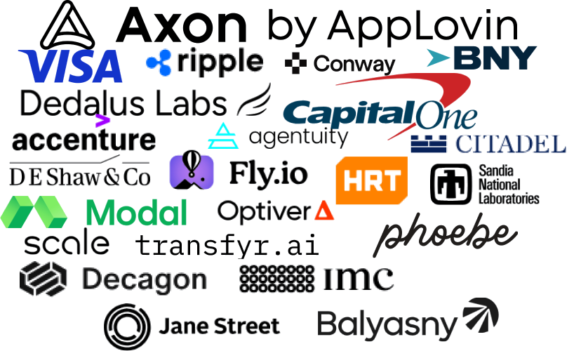
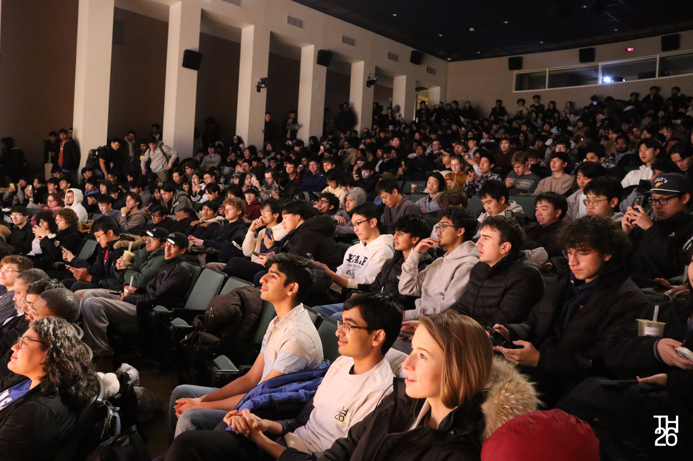
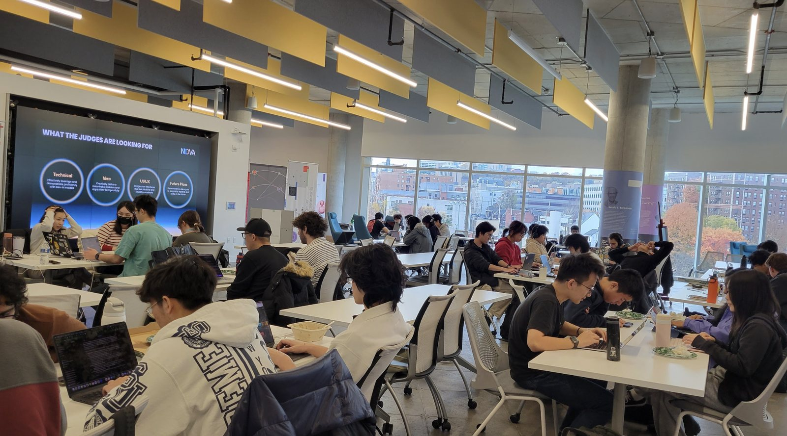
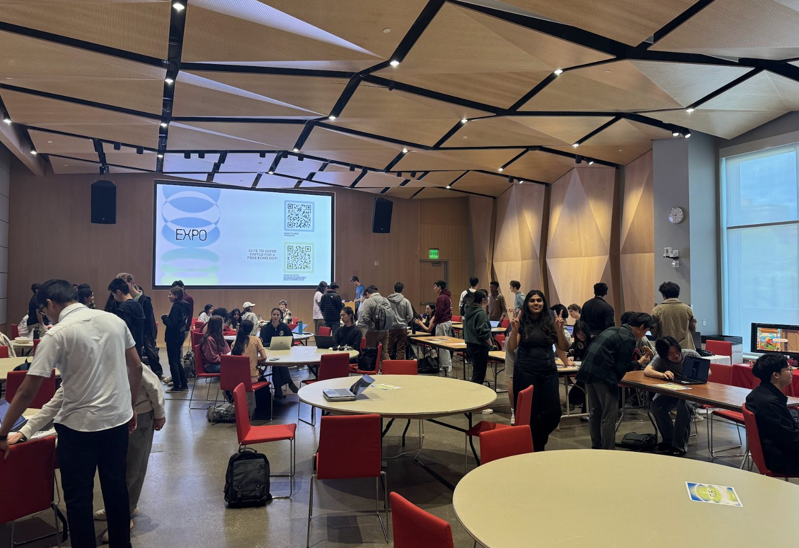

Our Mission is to foster a community of
passionate,
interdisciplinaryleaders
that use design and technology to achieve more.
As a key part of the fabric of CMU for over 15 years, we have deep roots and connections where it counts.
What is ScottyLabs? ScottyLabs is Carnegie Mellon’s premier builder club. We are a group of engineers, designers, entrepreneurs and organizers, passionate about building useful software projects and hosting educational events for our community. Our projects and apps reach over 80% of CMU students, and TartanHacks even hosts 1000+ hackers and reaches builders from CMU and globally.
ScottyLabs’ engineering core, shipping flagship products across web, mobile, and embedded while owning the infrastructure that keeps them running. Our Tech members tackle everything from AI agents to developer platforms, and incubate new projects proposed by members or built through external partnerships.
Finance manages hundreds of thousands of dollars every year, while building the financial logistics for every project in ScottyLabs. Across our 6 sub teams you'll learn how to navigate university finances, negotiate with sponsors, and work with every single committee in ScottyLabs. We are proudly supported by our sponsors below!

Labrador
Labrador brings students together to build new products from idea to deployment. Developers, product managers, and designers come together to grow ideas into real products, with ScottyLabs supporting them from concept to execution. We had 20+ active projects and over 100 members this year.
Interested?
Labrador welcomes builders of all backgrounds and experience levels. If you want to learn more, Join Labrador for a casual community dinner on September 3rd to kick off the fall semester!
Come meet the people behind Labrador, hear what our project teams are actually building, and get a feel for what being on the committee is really like.
Schedule:
6:00 – 6:15 PM: Welcome & intro to Labrador
6:15 – 6:45 PM: Lightning talks / demos from project teams
6:45 – 7:30 PM: Dinner + project & leadership tables (grab food, walk around, talk to whoever you want)
Design brings together some of CMU’s strongest designers from a wide range of backgrounds. Our work focuses on two core areas: branding and UI/UX. We create visual identities for major conferences like TartanHacks, as well as smaller campus events, and design digital products for technical and research-driven projects.
Foundry
CMU's premier founder-first startup accelerator. Foundry hand-picks up to seven teams per cohort, connects them to 50+ VC firms, and runs the builder community around them. Fifteen companies came through the forge in our first year, and affiliated teams have raised $11M+ in eight months. We’re recruiting for the 3 teams within Foundry
The Cohort: for founders
7 teams per sem
No equity, no fees. Weekly VC and founder sessions
Protected one-on-one time with investors
Warm introductions to 50+ firms.
The Builders: for the CMU entrepreneurship community
30 teams a semester
0 to 1 program for people at the very start
Builders get weekly sessions with working VCs and founders
Feedback and resources to improve your pitch.
The Committee: the backbone of Foundry
As an analyst on one of our three teams, you will run Foundry alongside our Partners and Associates:
Accelerator: VC relationships, investor events, cohort programming, and Demo Day.
Talent: the builder community, talks and socials, and Foundry's database of founders we can endorse.
Outreach: podcast management, speaker series planning, social media outreach, community event planning
Interested?
Foundry is hosting a dinner on September 5th 6-8 PM. Come hear how the accelerator actually runs, what each committee does, and how we pick a cohort. We're looking for people to join Foundry’s Committee and Cohort. Email foundry@scottylabs.org if you're interested!
Events
Events brings ScottyLabs to life for thousands of people each year. If you want to work anywhere along the end-to-end execution we do, from logistics to live experience, and at any scale, from speaker talks to TartanHacks, this is the place for you. We're looking for members from any background excited to create moments that connect, inspire, and stay with students long after they leave our events.

Outreach
Outreach drives visibility and growth for everything ScottyLabs builds, leading marketing and go-to-market strategy, scaling our events and products to reach thousands of students, ensuring our work doesn’t just get built, but that it gets seen, used, and remembered.


Say Hello
At ScottyLabs, we bring your ideas to life. With ScottyLabs build websites, startups, hackathons, and connections.
Scan here to join our TartanConnect Mailing List! All updates and event information will be sent through here, including the committee application, job opportunities, and more.